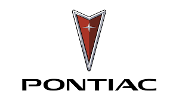
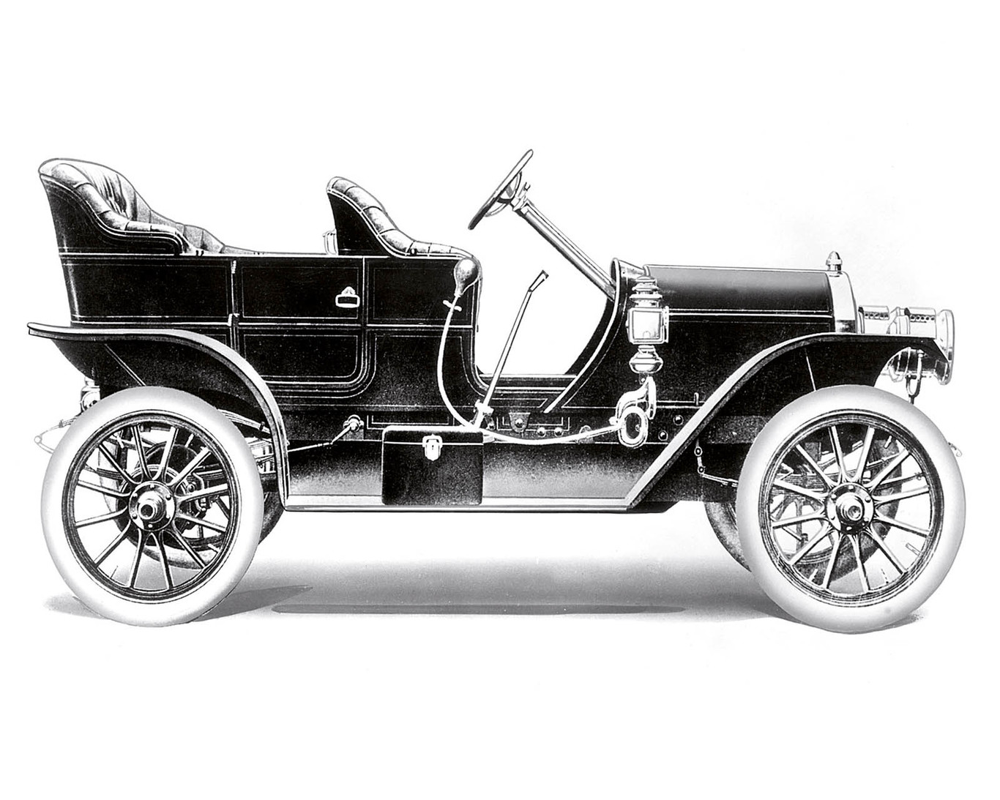
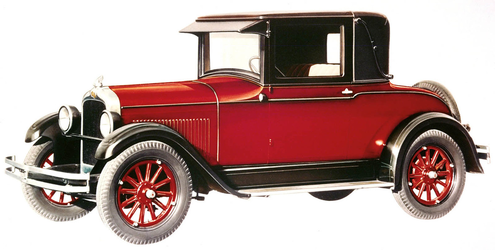
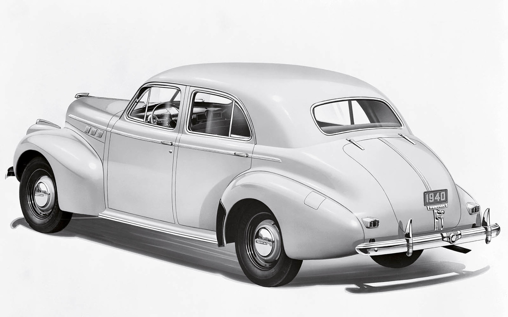
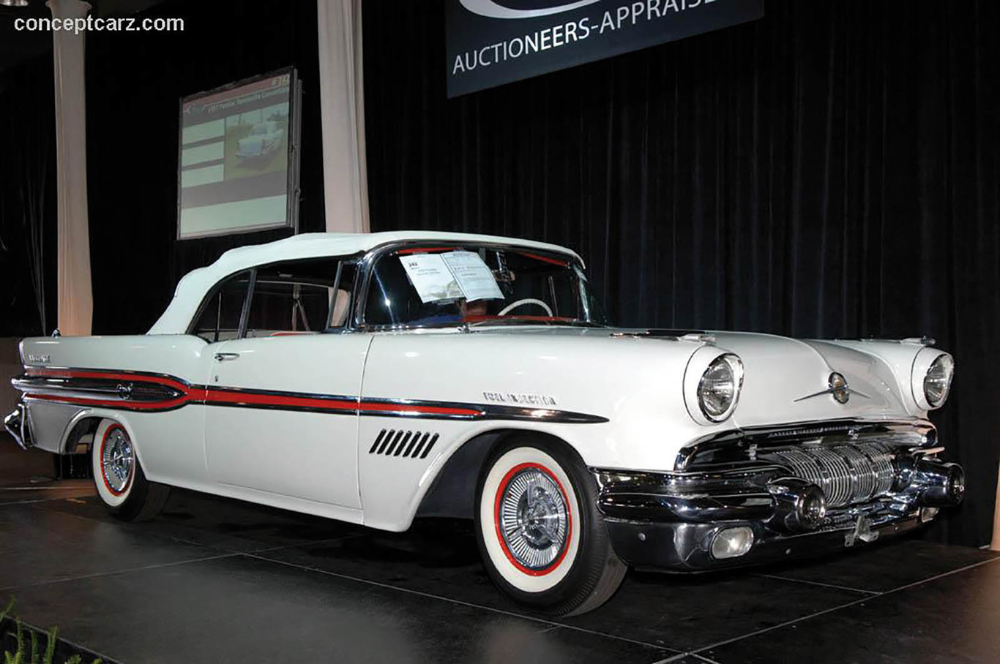
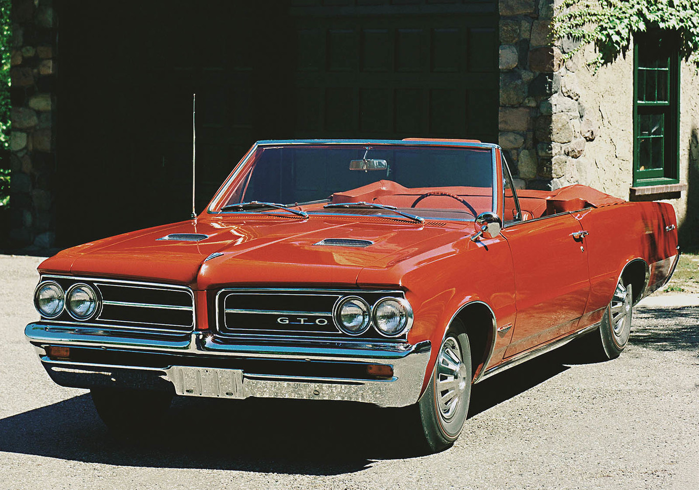
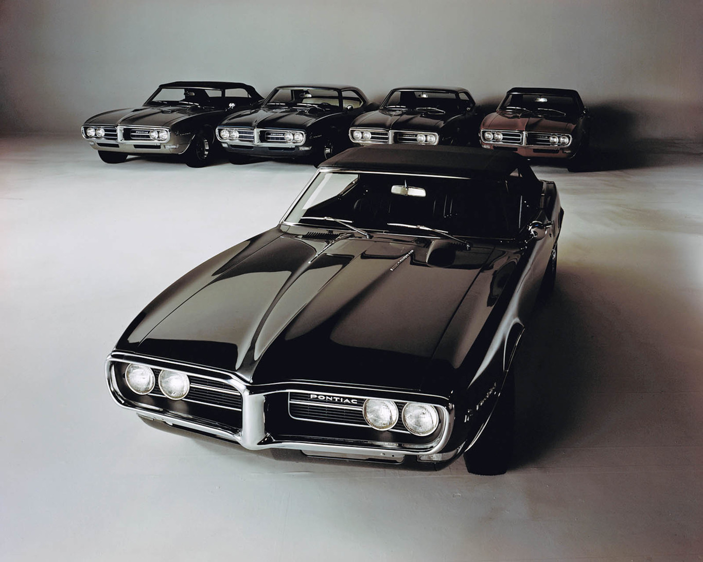
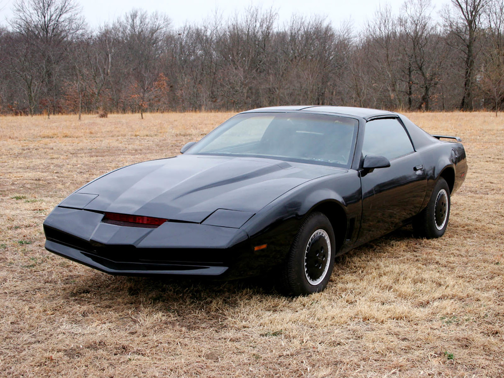
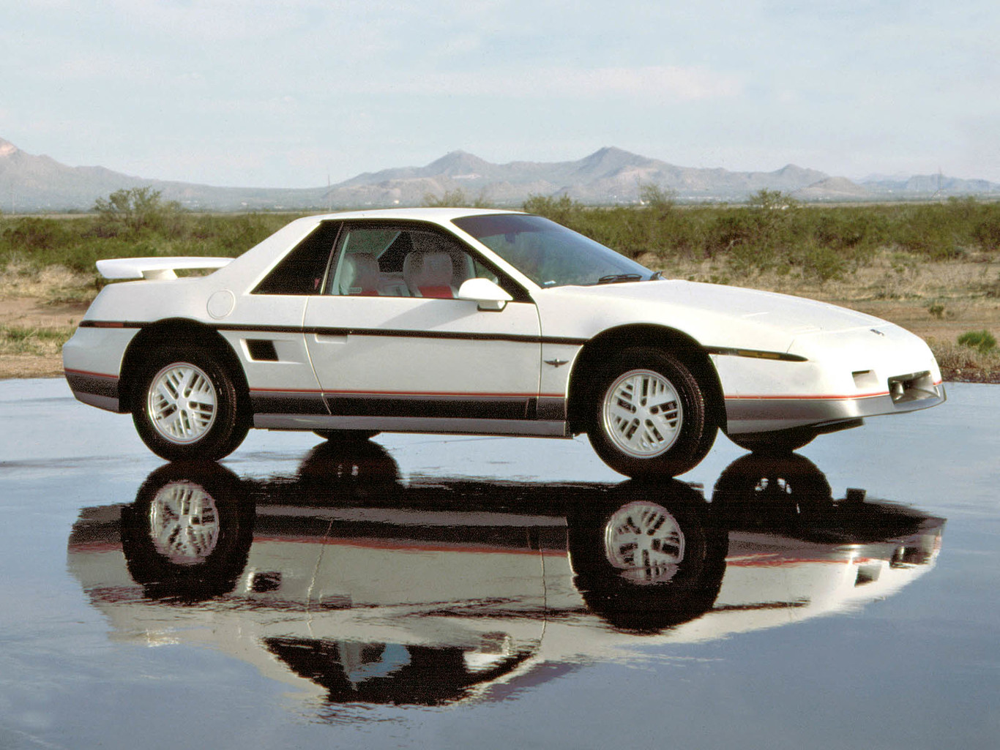

Los coches de Pontiac

Información.


Oakland (1907). El primer Pontiac
Oakland Pontiac 6-27 (1926). “Chief of the Sixes”
Pontiac Torpedo 8 (1940). Más por menos.
Pontiac Bonneville (1957). La mejor relación precio/prestaciones
Pontiac Tempest Le Mans GTO (1964). Nace el primer muscle car
Pontiac Firebird (1967). Mítico en muchos aspectos
Pontiac Trans Am Firebird (1982). Las bondades de la televisión
Pontiac Fiero (1984). De económico a deportivo
Pontiac Le Mans (1988). ¿En qué pensarían?
Pontiac Aztek (2002). ¿Por qué?
Pontiac GO (2004). Exótica reencarnación